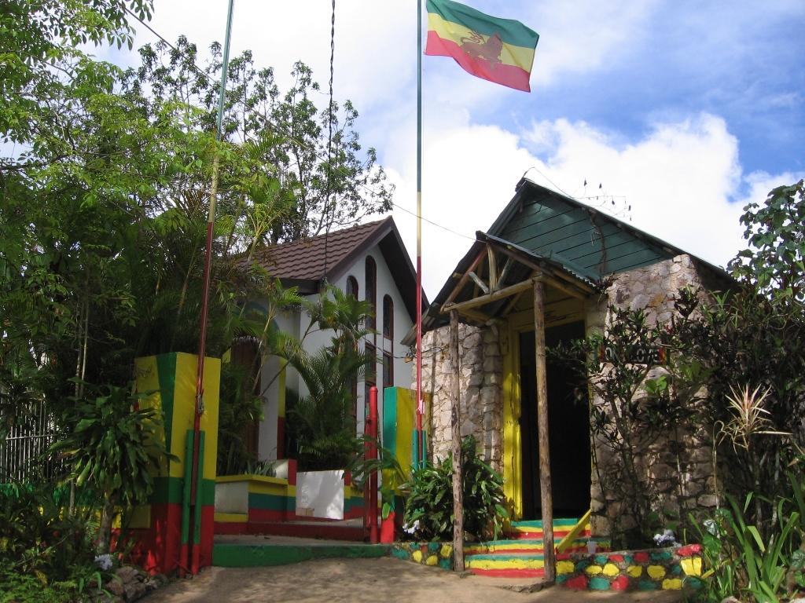
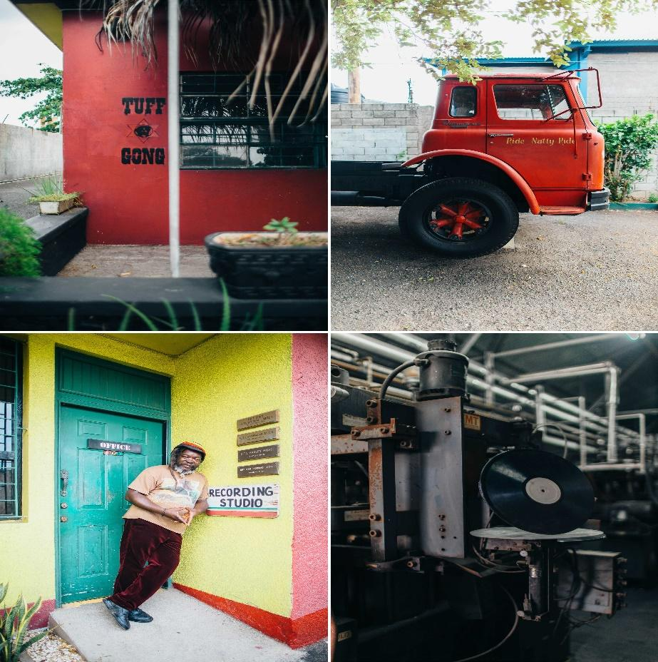

The term reggae was derived from rege-rege, a Jamaican phrase meaning “rags or ragged clothing,” it is used to denote a raggedy style of music. The reggae genre came into to being in the 1960’s as an evolution of the Rocksteady and Ska musical styles. Reggae music is a soulful entertainment in Jamaica. It expresses in words the pain, struggle, hope and emotion that is felt by the average person. Reggae music is recognized by its lament-like chanting and emphasizes the syncopated beat. It is distinguishable from other genres in the heavy use of the Jamaican vernacular and the African nyah-bingi drumming style. Reggae began to rise to international acclaim as the 1970s progressed. A seminal moment for the genre was the release of the 1973 movie The Harder They Come starring Jimmy Cliff. The movie soundtrack consisted of only reggae hits; this contributed in elevating the music to a internal platform.
Visit Nine Mile which is the birth place and final resting place of reggae legend Bob Marley. Listen to the knowledgeable guides tell stories of Bob’s childhood! Stand on Mount Zion Rock, where Bob used to meditate and rest your head on ‘the pillow’ that was made famous in the song ‘Talking Blues’.
Take a family-friendly tour of Bob Marley museum. The Museum is the former home of the reggae legend. Bob’s home is filled with rich memories and treasured mementos, which seek to preserve the life and accomplishment of this great Jamaican and outstanding musician.
Participate in Sumfest Reggae Festival. This is Jamaica’s biggest reggae festival, It is a three-day festival in Montego Bay is a three-day extravaganza (from July 12 through the 18th. It features internationally known music acts and contemporary takes on reggae alongside more tried-and-true originals.
Visit Tuff Gong International Recording Studio – a visit to Jamaica would not be complete without stopping by this world renown studio that contains Bob Marley’s original recording equipment.
